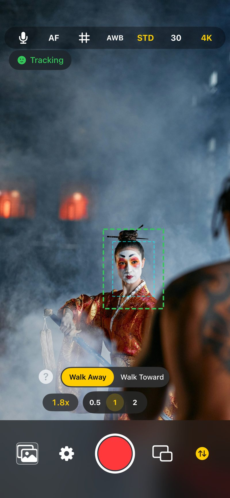
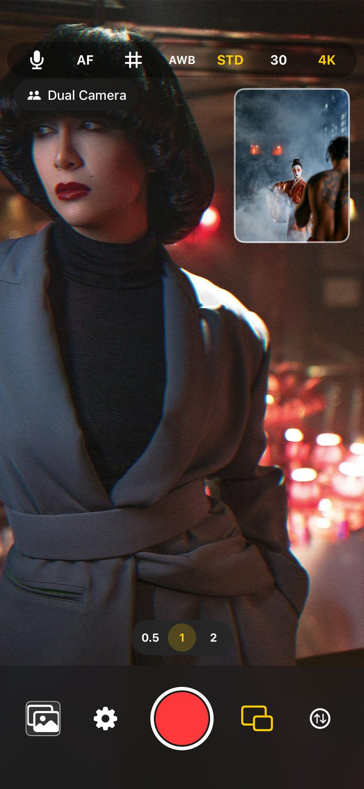
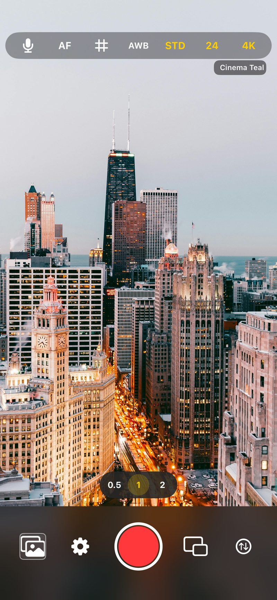
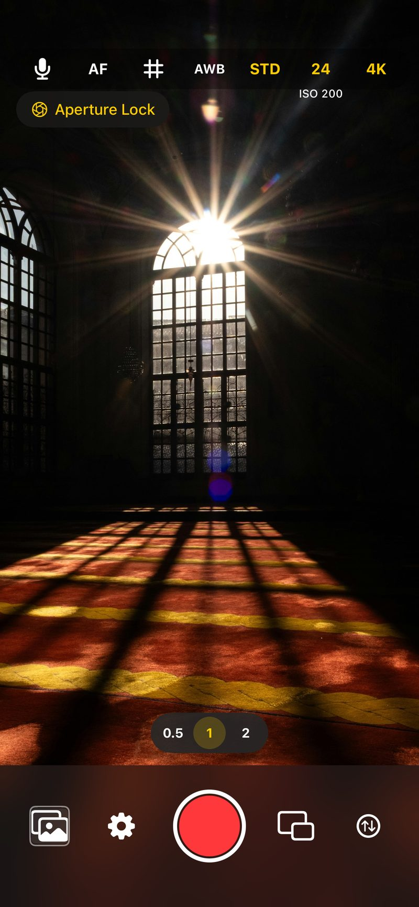
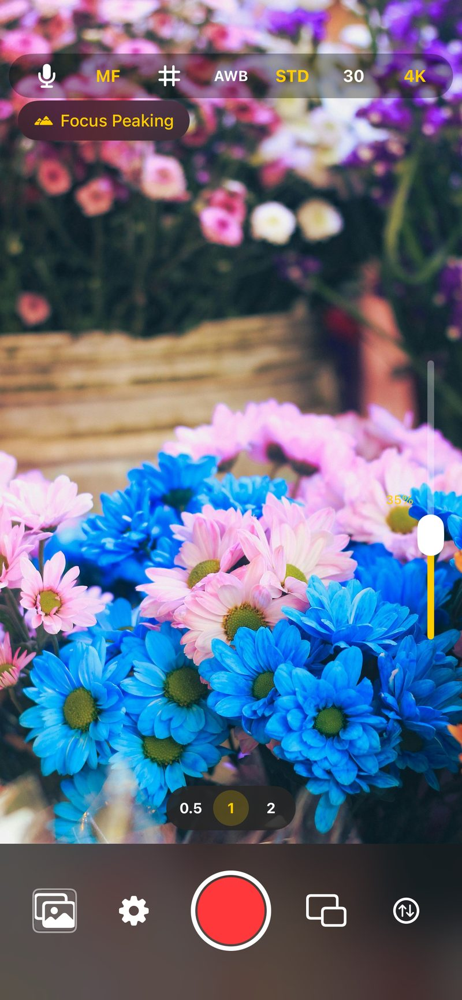
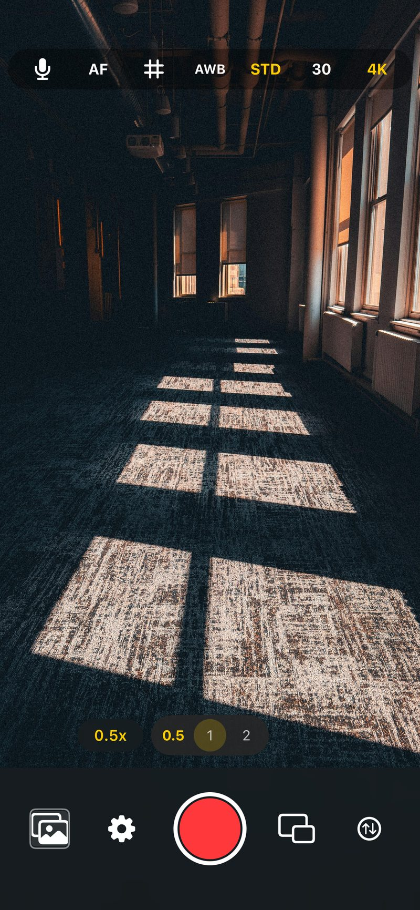
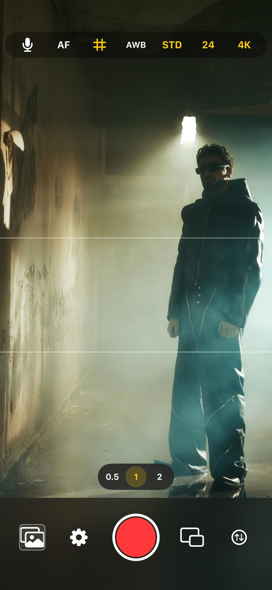
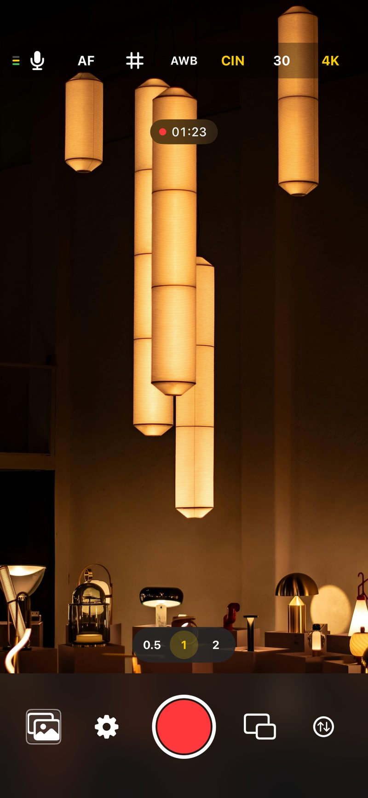
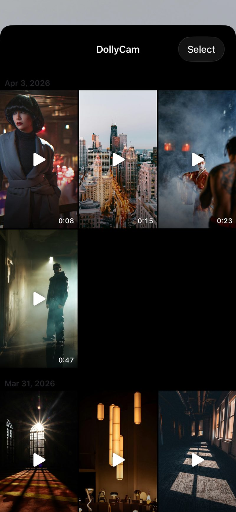
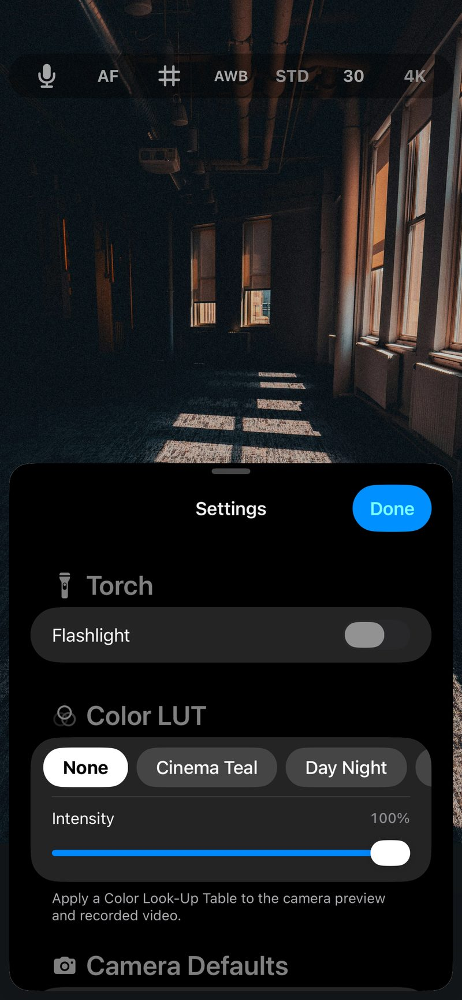

The Vertigo effect,
in your pocket.
DollyCam turns your iPhone into a one-person dolly zoom rig. The app tracks a face in real time and adjusts zoom as you walk toward or away from your subject — no rail, no crew, no post-production.










Walk. Record. Done.
Tap a face, pick a direction, and press record. The app handles the rest.
Walk Away
Zoom increases as you move back — subject stays the same size while the background stretches.
Walk Toward
Zoom decreases as you approach — compressing the background behind the subject.
Dialed in
Adjustable response & intensity, noise rejection, smoothing, monotonic ratchet — jitter-free pushes.
Front and back. At the same time.
Floating picture-in-picture you can drag anywhere on screen. Drag to the top or bottom edge for a 50/50 split-screen. Record to a single composited file, or save two synchronized files — one from each camera.
- — Drag-anywhere PiP window
- — 50/50 split-screen layout
- — Combined or separate file output
- — Video stabilization applied to both streams
Ten LUTs. Real-time. Baked in.
Apply .cube LUTs on the preview and in the recording — Cinema Teal, Nostalgic, Monochrome, Vivid, Warm Fade, and more. Import your own .cube files and blend intensity from 0 to 100%. Everything runs on a GPU-accelerated Metal pipeline with trilinear interpolation.
Pro controls. On-device. No subscription.
Everything you'd expect from a pro camera app — and nothing you don't.
180° shutter lock
True film-look motion blur at 24 or 30 fps. Auto ISO adapts to changing light; shutter stays fixed.
10 built-in LUTs
Cinema Teal, Nostalgic, Monochrome, Vivid, Warm Fade, and more. Import your own .cube files too.
ProRes 422
HQ, standard, LT, and Proxy. Plus HEVC & H.264, 4K & 1080p, 24/25/30/60 fps.
Beauty Cam
Real-time skin smoothing & whitening on a GPU Metal pipeline. Face-gated on back, full-frame on front.
Composition guides
Rule of Thirds, crosshair, and 2.39:1 Cinemascope framing overlays.
Save anywhere
DollyCam album in Photos, or save directly to external drives, SD cards, or any folder.
The details matter.
- Volume button triggers recording
- Accelerometer orientation detection
- Thermal state warnings
- External mic detection & level meter
- Auto / manual / focus-peaking modes
- Six white balance presets + lock
- Standard & Cinematic stabilization
- No internet required — runs entirely on-device
Specs
- Free download (limited time)
- Category — Photo & Video
- Platform — iPhone
- Requires — iOS 15.0 or later
- Size — ~14 MB
- Rating — 5.0 ★
- IAP — Multi-Aspect Shot $2.99
- IAP — Custom Folder Save $4.99
Shoot cinematic. Today.
Download DollyCam free for a limited time. No subscription, ever. Every core feature included.
Download on the App Store